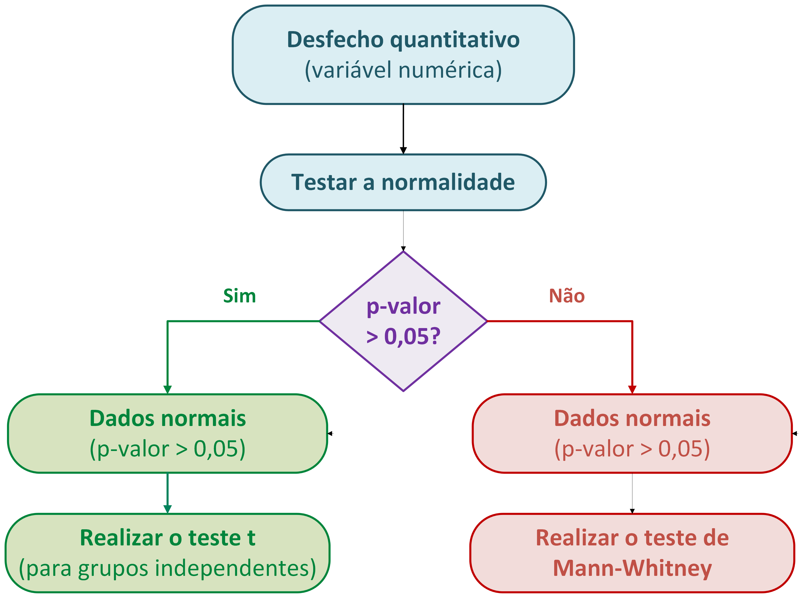
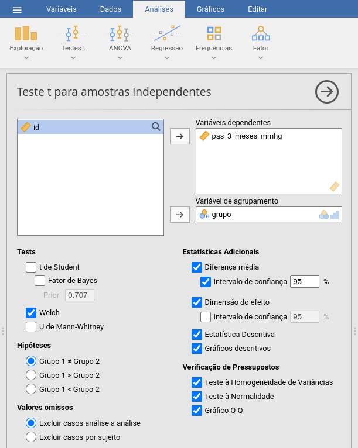
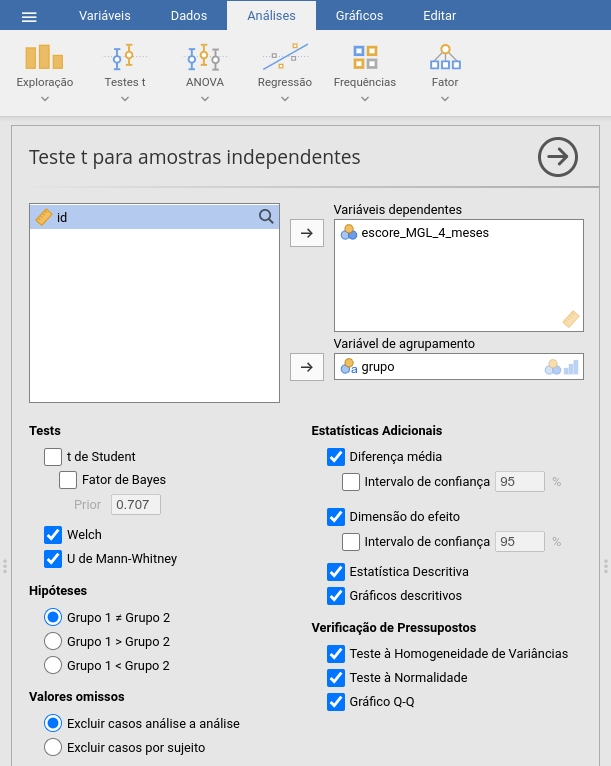
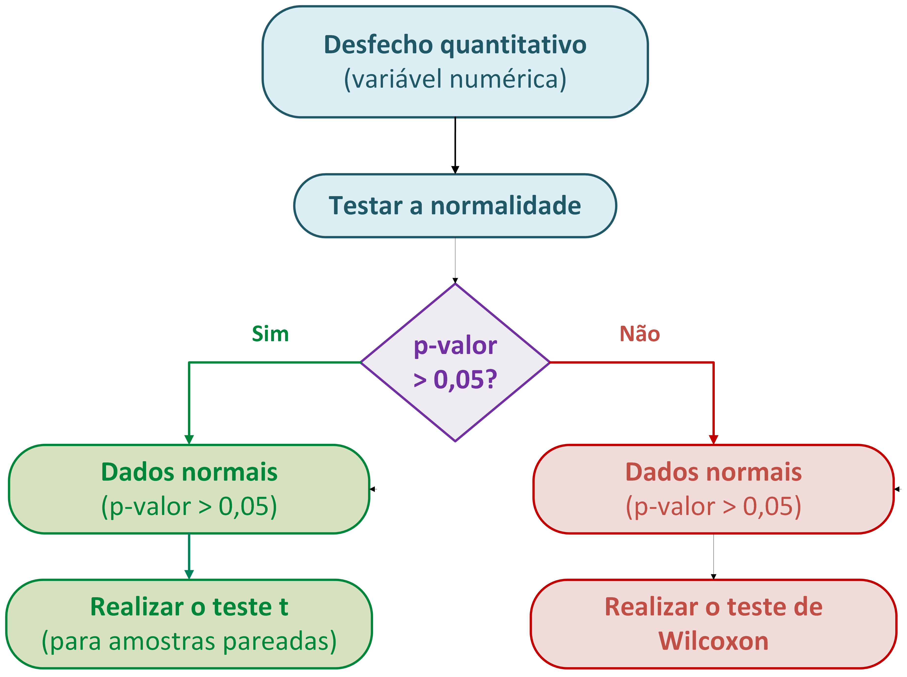
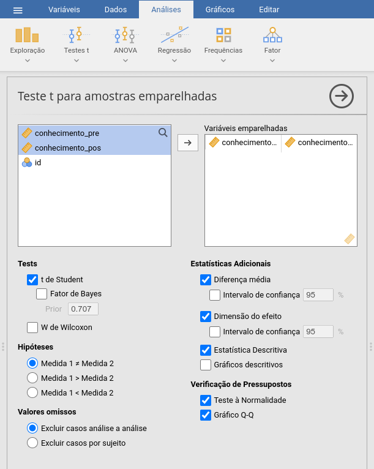
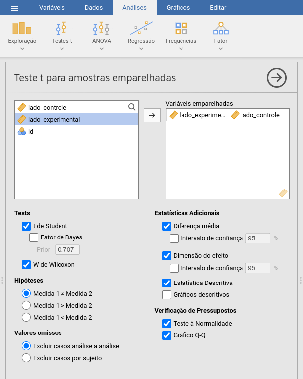
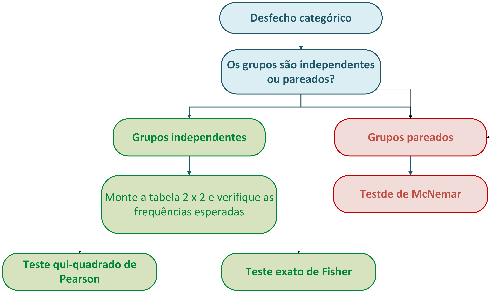
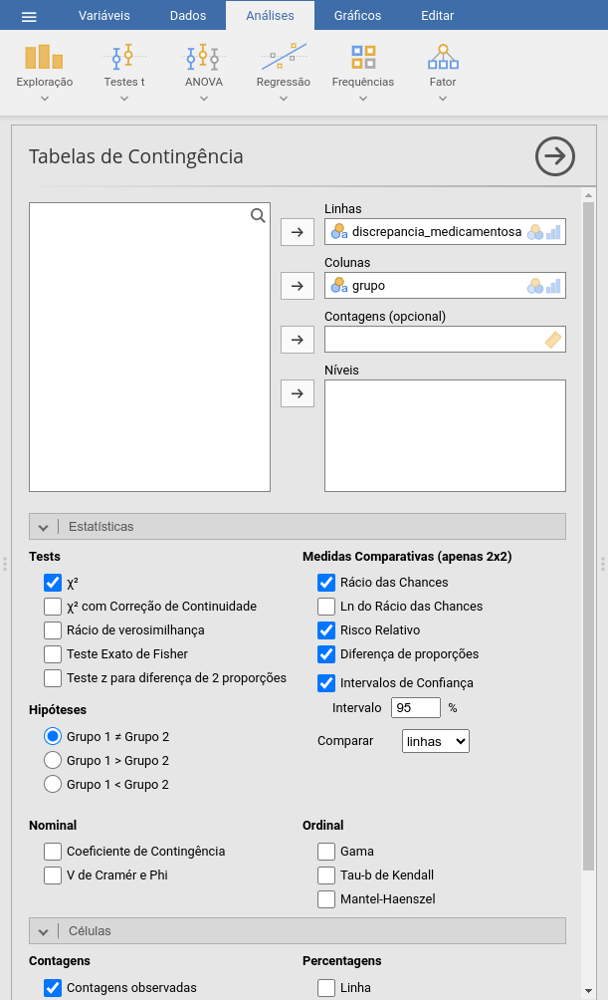
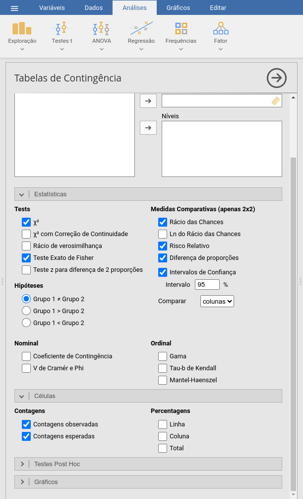
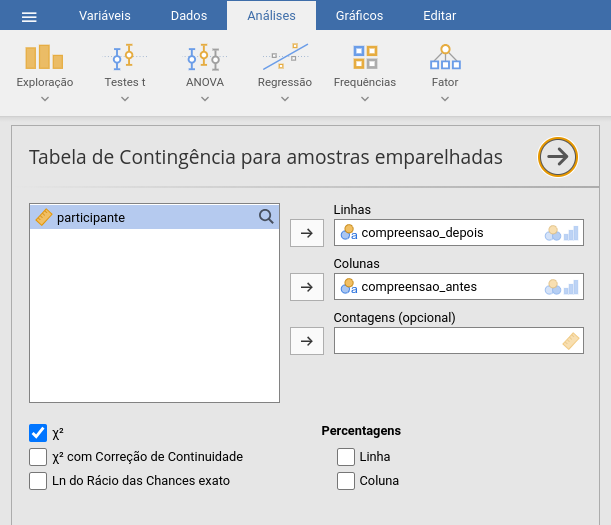

Comparação de dois grupos
Prof. Dr. Sadraque E. F. Lucena
http://sadraquelucena.github.io/FARMA0048
FARMA0048 - Bioestatística
Programa de Pós-Graduação em Ciências Farmacêuticas (PPGCF)
Hipóteses
Hipótese é uma afirmação sobre a população que queremos testar cientificamente.
Para a análise estatística devemos traduzir a pergunta científica para uma pergunta estaística.
Exemplos:
- Pergunta científica: O novo medicamento reduz a pressão arterial mais que o tratamento controle?
- Pergunta estatística: A pressão arterial média difere entre os grupos?
- Pergunta científica: O tratamento reduz a ocorrência de eventos adversos?
- Pergunta estatística: A proporção de pacientes com eventos adversos difere entre os grupos?
Não escolha o teste estatístico antes de definir a pergunta e o desfecho.
Hipótese Nula e Hipótese Alternativa
Hipótese nula (\(H_0\)): representa a ausência de diferença ou efeito entre os grupos.
Hipótese alternativa (\(H_1\)): representa a existência de diferença ou efeito entre os grupos.
- **A análise estatística busca avaliar se os dados fornecem evidências suficientes para rejeitar \(H_0\).&&
Teste Unilateral ou Bilateral
Teste Bilateral
- Pergunta se existe qualquer diferença entre os grupos (“É diferente?”).
- Exemplos:
- O novo medicamento produz uma pressão arterial média diferente da observada com o medicamento padrão?
- A concentração plasmática média do fármaco genérico é diferente da do medicamento de referência?
- A frequência de eventos adversos é diferente entre os pacientes que recebem o novo medicamento e o grupo controle?
Teste Unilateral ou Bilateral
Teste Unilateral
- Pergunta se a diferença ocorre em uma direção específica (“É maior?” “É menor?”).
- Exemplos:
- O novo medicamento reduz mais a pressão arterial do que o tratamento padrão?
- A nova formulação aumenta a biodisponibilidade do fármaco em relação à formulação convencional?
- O novo medicamento apresenta uma frequência de eventos adversos menor que a do tratamento padrão?
O que define a escolha do teste?
Os testes de comparação de dois grupos são escolhidos principalmente com base em três pilares:
Tipo de desfecho
Grupos independentes ou pareados
Pressupostos do teste
1. Tipo de Desfecho
Desfecho Quantitativo
- Peso corporal (kg)
- Concentração plasmática do fármaco (\(\mu\text{g/mL}\))
- Tempo até atingir concentração máxima (horas)
Desfecho Categórico (nominal)
- Ocorrência de reação adversa (Sim / Não)
- Tipo de reação adversa (Gastrointestinal / Dermatológica / Neurológica / etc.)
Desfecho Ordinal
- Intensidade da dor (Ausente → Leve → Moderada → Intensa)
- Nível de adesão ao tratamento (Baixa → Moderada → Alta)
2. Grupos Independentes ou Pareados
Grupos Independentes
- As observações de um grupo não dependem das observações do outro.
- Exemplos:
- Pressão arterial de pacientes que receberam fármaco A vs. fármaco B
- Glicemia de pacientes que receberam tratamento vs. placebo
- Escore de dor de homens vs. mulheres
Grupos Dependentes
- Existe uma correspondência entre as observações dos dois grupos.
- Exemplos:
- Glicemia medida antes e após uma intervenção
- Comparação entre dois medicamentos no mesmo paciente
3. Pressupostos
Antes de aplicar um teste, devemos verificar se seus pressupostos são atendidos.
Normalidade do desfecho
- Para desfechos quantitativos, o teste t exige normalidade
- Verificamos usando o teste de Shapiro-Wilk junto com o qq-plot.
- Se os dados não forem normais, usamos testes não-paramétricos (Ex.: Teste de Mann-Whitney ou Teste de Wilcoxon)
Qui-quadrado: frequências esperadas
- Para desfechos categóricos, o teste do qui-quadrado utiliza uma aproximação baseada nas frequências esperadas das células da tabela de contingência.
- Se há frequências esperadas muito pequenas, usamos o teste exato de Fisher.
Testes para Desfechos Quantitativos
Dois grupos independentes: Qual teste?

Dois grupos independentes: Teste t
- Compara a média do desfecho entre dois grupos
- Pressupõe distribuição aproximadamente normal
- Use como padrão o teste t de Welch
- Informe:
- Média ± desvio padrão de cada grupo
- Diferença entre as médias + IC95%
- Estatística t, graus de liberdade e p-valor
- Tamanho do efeito: Cohen’s d (0,00-0,19: desprezível; 0,20-0,49: pequeno; 0,50-0,79: moderado; ≥ 0,80: grande).
- Cohen’s d padroniza a diferença entre as médias, permitindo comparar a magnitude do efeito mesmo quando os desfechos estão em escalas diferentes.
Dois grupos Independentes: Teste de Mann-Whitney
- Compara a distribuição dos valores entre dois grupos independentes
- A variável pode ser quantitativa ou ordinal (escalas)
- Não exige distribuição normal
- Informe:
- Mediana e intervalo interquartil (IIQ) de cada grupo
- Estatística do teste (U) e p-valor
- Tamanho do efeito: rank-biserial correlation (\(r_{rb}\)) (interpretação similar ao d de Cohen)
Exemplo 3.1: Intervenção farmacêutica e pressão arterial
Um ensaio clínico randomizado avaliou a eficácia de uma intervenção conduzida por estudantes de Farmácia em adultos com hipertensão. Os participantes foram alocados para um grupo intervenção, que recebeu acompanhamento farmacêutico por mensagens de texto e consultas pessoais, ou para um grupo controle. Após três meses, foi medida a pressão arterial sistólica (PAS) dos participantes.
Pergunta de pesquisa:** A intervenção farmacêutica reduz a pressão arterial sistólica após três meses, em comparação ao grupo controle?
Dados: exemplo3.1.csv

Exemplo 3.1: Intervenção farmacêutica e pressão arterial
Como reportar:
A pressão arterial sistólica média foi menor no grupo intervenção em comparação ao grupo controle (135 ± 15,5 vs. 141 ± 15,2 mmHg). A diferença média foi de 6,20 mmHg (IC95%: 3,12–9,28), indicando menor pressão arterial sistólica no grupo intervenção. Essa diferença foi estatisticamente significativa (teste t de Welch: t = 3,96; gl = 382; p < 0,001), com tamanho de efeito pequeno a moderado (d de Cohen = 0,40).
Exemplo 3.2.: Adesão ao tratamento medicamentoso
Um estudo avaliou a efetividade de um serviço farmacêutico individualizado para melhorar a adesão ao tratamento medicamentoso de pacientes com hipertensão arterial. Os participantes foram distribuídos em dois grupos independentes:
- Intervenção farmacêutica: acompanhamento individualizado;
- Controle: cuidado habitual.
Após quatro meses de acompanhamento, a adesão ao tratamento foi avaliada pelo escore de Morisky-Green-Levine (MGL), uma escala com valores de 0 a 4.
Pergunta de pesquisa: O escore de adesão ao tratamento difere entre os pacientes que receberam a intervenção farmacêutica e aqueles do grupo controle?
Dados: exemplo3.2.csv

Exemplo 3.2.: Adesão ao tratamento medicamentoso
Como reportar:
O escore de adesão medicamentosa foi menor no grupo intervenção em comparação ao grupo controle (mediana [IQR]: 1 [0–1] vs. 2 [2–2]). A diferença entre os grupos foi estatisticamente significativa (U = 83,5; p < 0,001), com forte magnitude de efeito (correlação bisserial de ordens = −0,79).
Dois grupos Pareados: Qual teste?

Dois Grupos Pareados: Teste t pareado
- Compara a média das diferenças entre duas medidas pareadas
- Pressupõe distribuição aproximadamente normal das diferenças
- Informe:
- Média ± desvio padrão de cada medida
- Diferença média + IC95%
- Estatística t, graus de liberdade e p-valor
- Tamanho do efeito: d de Cohen
Dois Grupos Pareados: Teste de Wilcoxon
- Compara a distribuição das diferenças entre duas medidas pareadas
- Não pressupõe distribuição normal das diferenças
- Baseia-se nos postos (ranks) das diferenças
- Informe:
- Mediana e intervalo interquartil (IQR) de cada medida
- Estatística W + p-valor
- Tamanho do efeito: correlação bisserial de ordens
Exemplo 3.3
Vinte e um farmacêuticos realizaram um teste de conhecimento imediatamente antes e após um programa educacional sobre monitoramento laboratorial relacionado à farmacoterapia. A pontuação do teste varia de 0 a 50 pontos. Cada participante realizou o mesmo teste antes e depois da intervenção.
Pergunta de pesquisa: A intervenção educacional melhora o conhecimento de farmacêuticos sobre monitoramento laboratorial de medicamentos?
Dados: exemplo3.3.csv

Exemplo 3.3
Como reportar:
A pontuação média de conhecimento aumentou de 27,2 ± 8,1 pontos antes da intervenção para 38,9 ± 8,4 pontos após a intervenção. O aumento médio foi de 11,7 pontos (IC95%: 8,6–14,8). Essa diferença foi estatisticamente significativa (teste t pareado: t(20) = 7,62; p < 0,001), com tamanho de efeito grande (d de Cohen = 1,66).
Exemplo 3.4
Um estudo avaliou a eficácia de um novo produto tópico para redução da oleosidade da pele. Para controlar a variabilidade individual, cada participante aplicou:
- Produto experimental em um lado do rosto;
- Produto controle no lado contralateral.
Após 4 semanas, a oleosidade foi medida por um instrumento específico, produzindo um índice de oleosidade da pele.
Pergunta de pesquisa: A oleosidade da pele difere entre o lado tratado com o novo produto e o lado tratado com o produto controle?
Dados: exemplo3.4.csv

Exemplo 3.4
Como reportar:
A mediana do índice de oleosidade da pele foi menor no lado experimental em comparação ao lado controle (50,0 vs. 65,5 UA). A diferença mediana entre os lados foi de −16,5 UA. Essa diferença foi estatisticamente significativa (teste de Wilcoxon: W = 0,00; p < 0,001), com efeito muito grande (correlação bisserial de ordens = −1,00).
Desfecho Categórico
Desfecho Categórico
O desfecho é classificado em categorias. Exemplos:
- Presença/ausência de evento adverso
- Cura/não cura
- Leve/moderado/grave
Para comparar dois grupos, construímos uma tabela de contingência
Pergunta principal: A distribuição do desfecho difere entre os grupos?
Além do p-valor, devemos quantificar a magnitude da associação
- Diferença de risco (RD)
- Risco relativo (RR)
- Odds ratio (OR)
Tamanho do efeito: RD, RR e OR
Considere um estudo com dois grupos> A tabela de contigência é:
| Evento | Sem evento | Total | |
|---|---|---|---|
| Intervenção | 20 | 80 | 100 |
| Controle | 40 | 60 | 100 |
Risco: probabilidade de apresentar o evento
- Intervenção = 20/100 = 20%
- Controle = 40/100 = 40%
Diferença de risco (RD)
- RD = 20% − 40% = −20 pontos percentuais
- O risco foi 20 pontos percentuais menor na intervenção.
Risco relativo (RR)
- RD = 20% / 40% = 0,50
- O risco na intervenção foi 50% do risco do controle (redução relativa de 50%)
Odds ratio (OR)
- Odds = evento / não evento
- Intervenção = 20/80 = 0,25
- Controle = 40/60 = 0,67
- OR = 0,25 / 0,67 = 0,38
- As odds do evento foram aproximadamente 62% menores na intervenção.
Desfecho categórico: Qual teste?

Teste Qui-Quadrado
Compara a distribuição de frequências de um desfecho categórico entre grupos independentes
Adequado quando as frequências esperadas são suficientemente grandes
- Regra prática: ≥ 5 em todas as células da tabela 2 × 2
Informe:
- Frequência e proporção (%) em cada grupo
- Estatística \(\chi^2\)
- Graus de liberdade
- p-valor
- Medida de efeito: RR, OR ou RD + IC95%
Teste Exato de Fisher
Compara a distribuição de frequências de um desfecho categórico entre grupos independentes
Preferível quando as frequências esperadas são pequenas
- Especialmente em tabelas 2 × 2
- Amostras pequenas ou eventos raros
Calcula o p-valor sem depender da aproximação qui-quadrado
Informe:
- Frequência e proporção (%) em cada grupo
- p-valor
- Medida de efeito: RR, OR ou RD + IC95%
Qui-quadrado: frequências esperadas suficientemente grandes
Fisher: frequências esperadas pequenas
Teste de McNemar
Compara um desfecho categórico em duas medidas pareadas. Exemplos:
Presença/ausência de evento antes vs. depois
Teste diagnóstico antes vs. depois
Resposta no lado direito vs. lado esquerdo
Baseia-se nos pares discordantes
Informe:
- Frequências e proporções em cada momento
- Estatística do teste
- p-valor
- Medida de efeito apropriada + IC95%
O McNemar é o equivalente categórico da lógica de comparação pareada.
Exemplo 3.5
Um estudo avaliou se uma intervenção farmacêutica estruturada antes da alta hospitalar poderia reduzir a ocorrência de eventos adversos relacionados a medicamentos após a alta. Os pacientes foram distribuídos em dois grupos independentes:
- Intervenção farmacêutica: revisão da farmacoterapia, orientação individualizada e contato de acompanhamento após a alta;
- Cuidado habitual: cuidado habitual.
Nos 30 dias seguintes à alta, os pacientes foram avaliados quanto à ocorrência de pelo menos um evento adverso relacionado a medicamentos.
Pergunta de pesquisa: A ocorrência de eventos adversos relacionados a medicamentos nos 30 dias após a alta difere entre os pacientes que receberam a intervenção farmacêutica e aqueles que receberam o cuidado habitual?
Dados: exemplo3.5.csv

Exemplo 3.5
Como reportar:
A ocorrência de discrepância medicamentosa foi menor no grupo que recebeu intervenção farmacêutica em comparação ao cuidado usual (10,0% vs. 24,2%). Essa diferença foi estatisticamente significativa (χ²(1) = 8,50; p = 0,004). A intervenção esteve associada a menor ocorrência de discrepâncias (OR = 0,35; IC95%: 0,17–0,72).
Exemplo 3.6
Um laboratório de tecnologia farmacêutica avaliou a estabilidade física de uma suspensão oral extemporânea submetida a duas condições de armazenamento durante o período de estudo. Após o armazenamento, cada frasco foi classificado quanto à presença de instabilidade física — como formação de agregados, sedimentação irreversível ou dificuldade de redispersão. Foram avaliados 30 frascos, 15 armazenados sob refrigeração e 15 à temperatura ambiente.
Pergunta de pesquisa: A ocorrência de instabilidade física difere entre as duas condições de armazenamento?
Dados: exemplo3.6.csv

Exemplo 3.6
Como reportar:
A ocorrência de instabilidade física foi de 6,7% no grupo armazenado sob refrigeração e de 40,0% no grupo armazenado à temperatura ambiente. Embora a ocorrência tenha sido maior à temperatura ambiente, não houve evidência estatística suficiente de diferença entre as condições de armazenamento pelo teste exato de Fisher (p = 0,080).
Exemplo 3.7
Um estudo avaliou se a inclusão de pictogramas nas instruções de uso de medicamentos melhora a compreensão das orientações por pacientes adultos. Cada participante recebeu uma instrução convencional e respondeu a uma pergunta sobre o modo correto de utilização do medicamento. Em seguida, recebeu a mesma orientação com pictogramas farmacêuticos padronizados e respondeu novamente à pergunta. Foram avaliados 80 participantes. O desfecho foi classificado comocorreto ou incoreto.
Pergunta de pesquisa: A proporção de participantes que compreendem corretamente a orientação de uso do medicamento muda após a inclusão dos pictogramas?
Dados: exemplo3.7.csv

Exemplo 3.7
Como reportar:
A proporção de participantes que compreenderam corretamente as instruções aumentou de 47,5% antes da inclusão dos pictogramas para 67,5% após a intervenção, correspondendo a um aumento absoluto de 20,0 pontos percentuais. Essa mudança foi estatisticamente significativa (teste de McNemar: χ²(1) = 8,00; p = 0,005).
Fim